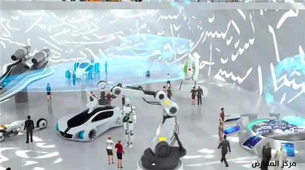

3Dプリンティング技術の未来は明るく、製造業の復活においてもますます重要な役割を果たします。 3Dプリント（積層造形とも呼ばれます）テクノロジーの人気が高まるにつれ、このテクノロジーに関する議論は2年前よりも具体的になりました。これまで、金融や技術の観点から、3Dプリンターで従来の多くのプロセスを完了できるかどうかを議論してきました。現在、3D印刷の成功例はますます増えており、この技術の商業的利点も明らかであり、3D印刷がすでに主流の製造技術として使用できることを証明しています。 3D印刷技術とその材料サプライチェーンの成熟に伴い、医療、自動車、航空宇宙、防衛などの複数の業界の主要な事業分野は、生産とビジネスにおいて大きな変革を遂げました。たとえば、航空機の設計者は3D印刷技術を使用して、エアダクト、ベント、エアフローシステムなどの航空機コンポーネントを製造します。これにより、航空機の重量が減り、コンポーネントの数が減り、キャビンの内部にフィットするコンパクトなデザインになります。さらに、3D印刷技術は、設計作業にある程度の自由度をもたらします。これは、設計者が潜在的な障害点を減らしながら、より効果的かつ効率的な部品形状を試すのに便利です。これにより、航空機メーカーは製品の生産においてより柔軟になり、同時に短縮され続ける生産サイクルに対応することができます。
